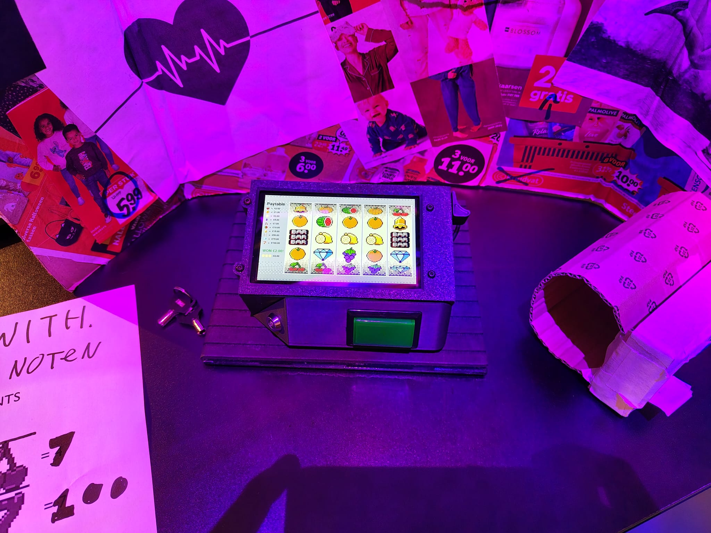
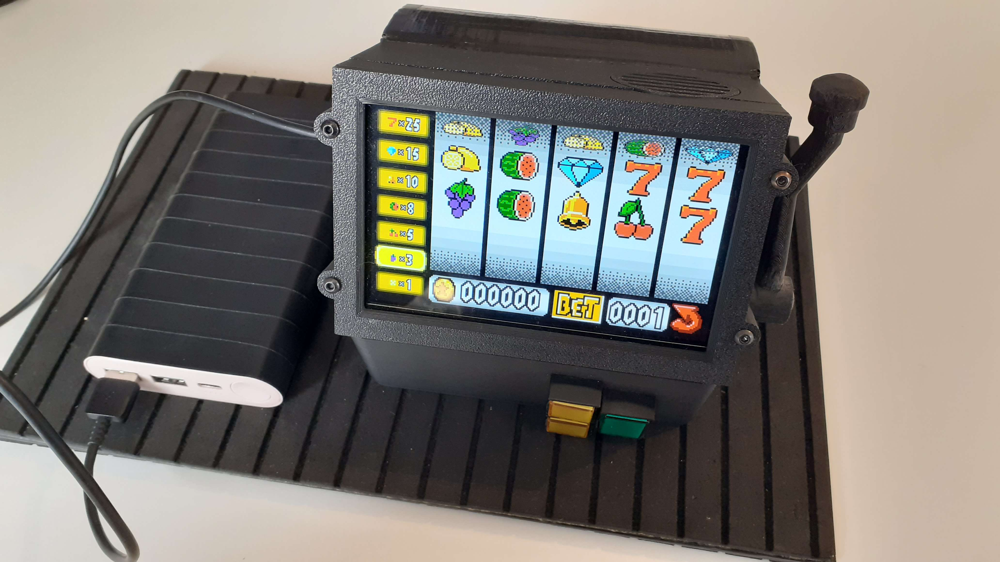
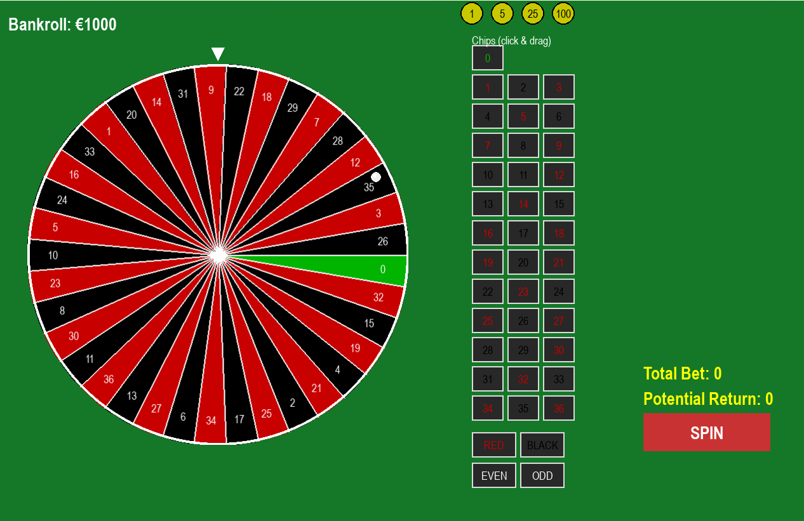
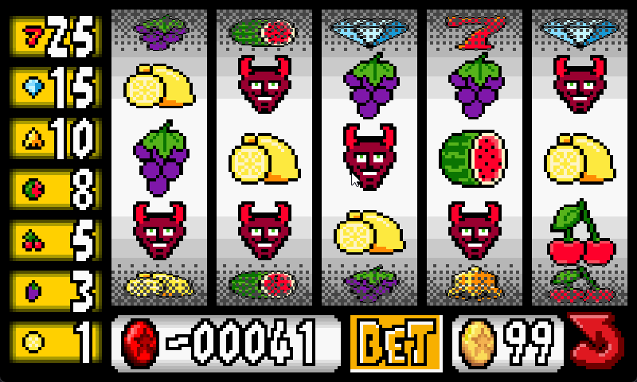
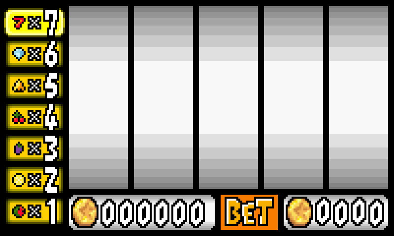
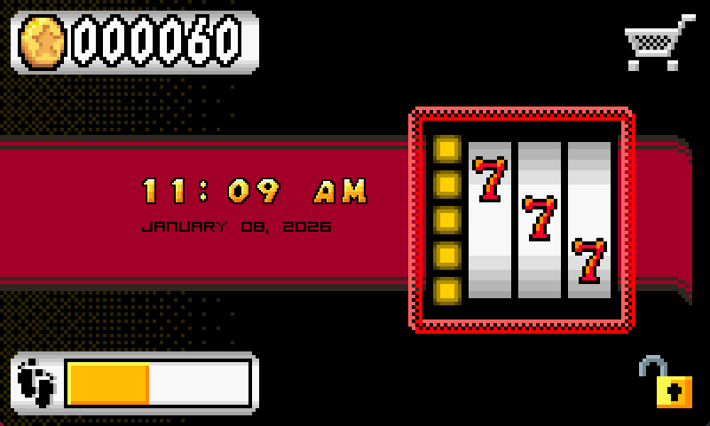

Controlling Wearable
The Controlling Wearable is a provocative wearable prototype that explores the ethical boundaries of gamification, control, and motivation in wearable technology. The project intentionally focuses on unethical design choices to spark discussion and reflection.
Project Context & Goal
This project was created as part of a Dark Tech assignment, where the goal was to design a technology that challenges ethical norms. Instead of designing a “good” or responsible product, we deliberately created the opposite: an unethical prototype.
We designed a Fitbit / Pip‑Boy style gambling bracelet that uses gambling mechanics to control user behavior. The wearable motivates users to exercise more by locking progress, rewards, or game access behind physical activity.
The main goal was not to promote gambling, but to learn about ethics, manipulation, and responsibility by designing a system that intentionally crosses ethical boundaries.
My Role in the Project
I worked as a Creative Technologist in a multidisciplinary team of 5. My responsibilities included both technical and conceptual contributions.
- Concept development and ethical framing of the product
- Designing the wearable’s visual style and interaction flow
- Making decisions about hardware and form factor
- Programming and prototyping game mechanics
- Actively contributing to team discussions and design decisions
Games & Mechanics
The wearable featured multiple gambling-inspired mechanics designed to influence user behavior.
- Roulette Game – fully designed and implemented by me
- Slot Machine – contributed to design and mechanics
- Exercise-based progression system
- Restricted access to rewards to increase dependency
I researched slot machine mechanics, RTP (Return to Player), and real-world gambling strategies to ensure the system felt realistic and psychologically persuasive.
Skills Demonstrated
- Creative technology & conceptual design
- Ethical analysis and critical reflection
- Game design and gamification mechanics
- Unity development and prototyping
- Hardware-oriented thinking and wearable design
- Research into behavioral psychology and gambling systems
- Team collaboration and communication
Reflection & Learning Outcomes
This project taught me how easily technology can manipulate behavior when unethical design choices are made. By intentionally designing a controlling system, I gained deeper insight into:
- The responsibility designers and developers carry
- How gamification can become manipulation
- The importance of ethical boundaries in tech design
Creating an unethical prototype helped me better understand why ethical decision‑making is essential in real-world technology development.
Project Images
Click images to enlarge
Controlling Wearable First Prototype

Controlling Wearable Second Prototype

Roulette Game Screen

User interface Slots

Slots Game interface

Win Animation
Home Screen
